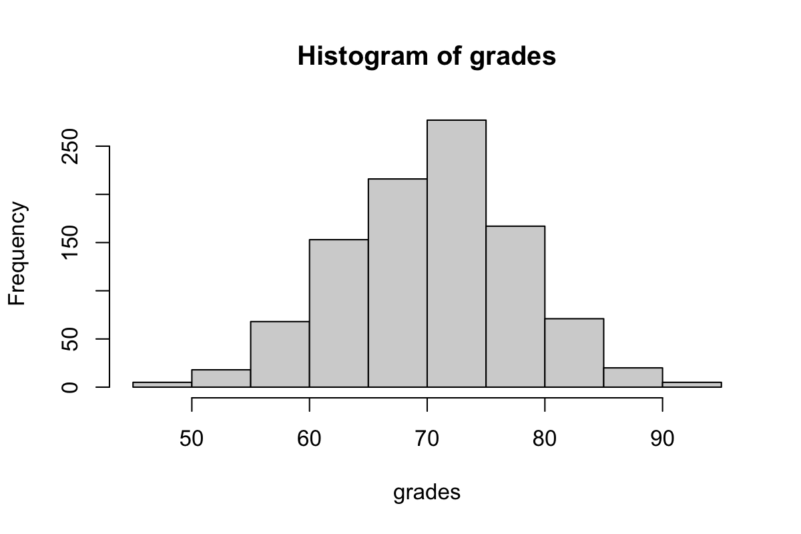
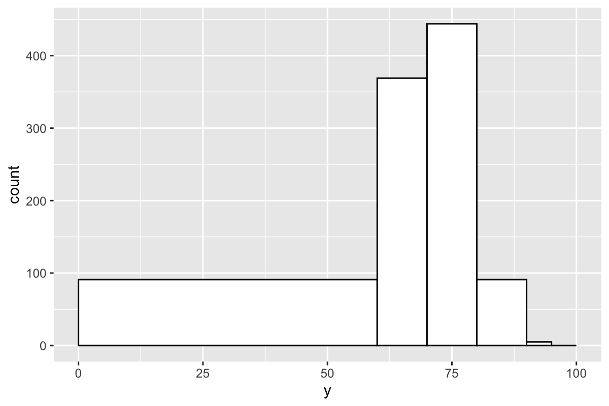
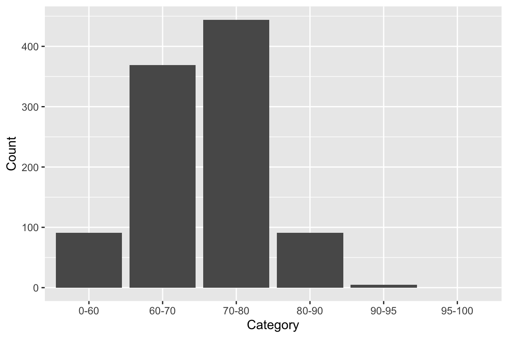
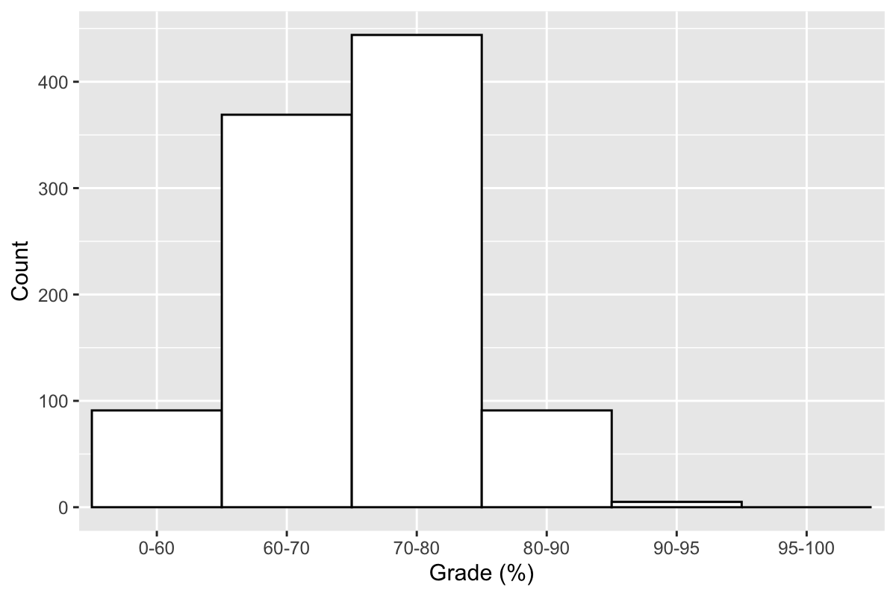
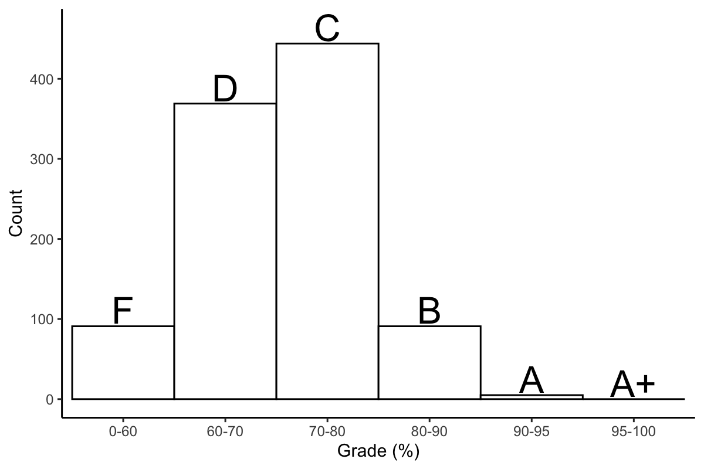

Introduction
Histograms are one of the simplest yet effective ways to visual data. In most default histograms, data is divided into evenly spaces bins, but what if you don't want that?
Take for example, a distribution of exam grades.

Perhaps this might not be a totally accurate depiction of most exam grades (highly dependent on the class), but the distribution of grade percentage might not entirely match the distribution of letter grades. What if we're interested in the number of F's, D's, C's, Bs, A's, and A+'s?
Required libraries
You only need ggplots, which is conveniently included in the tidyverse package.
library(tidyverse)
First solution
For this example, letter grades are assigned as follows: F: 0-60: D: 60-70, C: 70-80, B: 80-90, A: 90-95, A+: 95-100.
We can set custom breaks using ggplots geom_histogram() function.
ggplot(data = data.frame(y=grades), aes(y)) +
geom_histogram(breaks=c(0,60,70,80,90,95,100), color="black", fill="white")

Depending on your goals, this might be fine, but if you want bars of equal width, then you will need to do a bit more coding.
On with it
We're actually going to make a bar graph disguised as a histogram. For this, we need to create a table in the following format.
## Category Count
## 1 0-60 100
## 2 60-70 400
## 3 70-80 380
## 4 ... ...
We'll make a function that can be recycled for different datasets. values is the vector of your numeric data. breaks are the breaks in the histogram. The return value of this function will be the data frame in the format above.
bin = function(values, breaks) {
categories = c()
counts = c()
# Main steps:
# 1: Fill out categories
# 2: Assign counts to each category
return(data.frame(Category = categories, Count = counts))
}
Filling out the categories
To fill out the categories, we're just using paste() to concatenate each break value with the next one in the vector, separating the pair of strings by a dash. For each created category, we'll also initialize the count for that category, which is zero.
categories = c()
counts = c()
for (i in 1:(length(breaks) - 1)) {
categories = c(categories, paste(breaks[i], breaks[i + 1], sep="-"))
counts = c(counts, 0)
}
After creating the categories, we need them to be factors so that ggplot doesn't mixup the order. Because the categories are created in order, they can be used as the levels.
categories = factor(categories, levels=categories)
Filling out the counts
We have our categories. Now we need the counts for each category. We'll loop through each value and then, for each value, loop through the categories -- specifically the upper and lower limit of each category. If the value fits inside the upper and lower limit, then add the count to the corresponding category.
for (r in 1:length(values)) { # 'values' here is the input vector of your data
value = values[r]
if (is.numeric(value)) { # Safety first
for (i in 1:(length(breaks) - 1)) {
lower = breaks[i]
upper = breaks[i + 1]
if (value >= lower && value < upper) {
counts[i - 1] = counts[i - 1] + 1
break
}
}
}
}
Here's the completed function.
bin = function(values, breaks) {
categories = c()
counts = c()
### Fill out categories
for (i in 1:(length(breaks) - 1)) {
categories = c(categories, paste(breaks[i], breaks[i + 1], sep="-"))
counts = c(counts, 0)
}
categories = factor(categories, levels=categories)
### Assign counts to each category
for (r in 1:length(values)) {
value = values[r]
if (!is.na(value)) {
for (i in 1:(length(breaks) - 1)) {
lower = breaks[i - 1]
upper = breaks[i]
if (value >= lower && value < upper) {
counts[i - 1] = counts[i - 1] + 1
break
}
}
}
}
# Return the data frame
return(data.frame(Category = categories, Count = counts))
}
And here is the output.
bin(grades, breaks=c(0,60,70,80,90,95,100))
## Category Count
## 1 0-60 91
## 2 60-70 369
## 3 70-80 444
## 4 80-90 91
## 5 90-95 5
## 6 95-100 0
Finally, we can plot the data as a histogram.
grades.binned = bin(grades, breaks=c(0,60,70,80,90,95,100))
ggplot(grades.binned, aes(Category, Count)) +
geom_bar(stat="identity")

Touching up
We can afford to touch up this graph a bit. Change that X-axis title, and you set width=1 if you want to remove the space between the bars.
ggplot(grades.binned, aes(Category, Count)) +
geom_bar(stat="identity", width = 1, color="black", fill="white") +
labs(x="Grade (%)")
 Go wild if you want.
ggplot(cbind(grades.binned, Letter=c("F", "D", "C", "B", "A", "A+")), aes(Category, Count)) +
geom_bar(stat="identity", width = 1, color="black", fill="white") +
geom_text(aes(label=Letter, y=Count+20), size=8) +
labs(x="Grade (%)") +
theme_classic()
